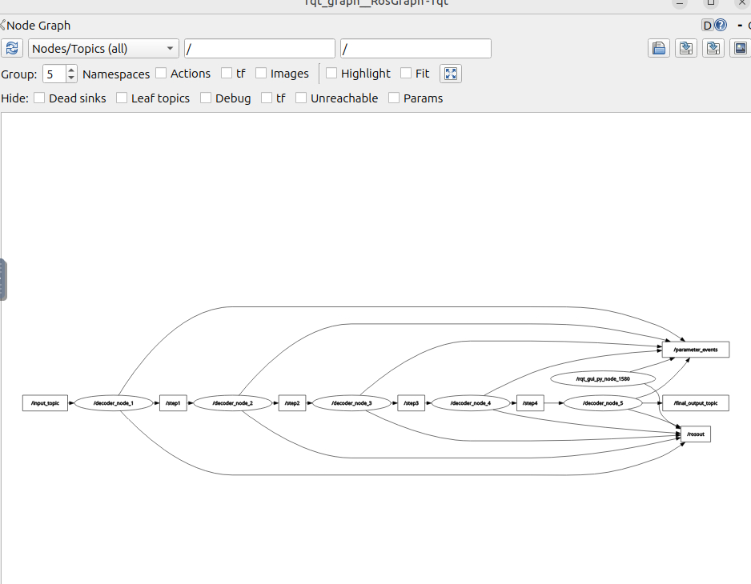
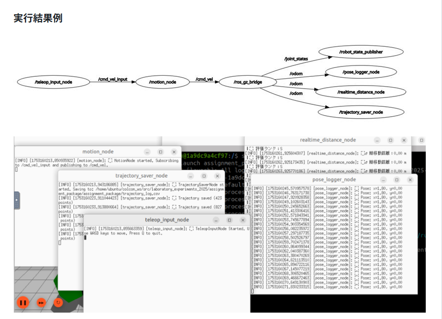

ROS 2環境を用いて開発した、2つの実践的なシステムパッケージです。
前半は、5つのノードが順番にトピック通信を行い、暗号文を段階的に復号していく「伝言ゲーム型の暗号解読システム」を構築しました。
後半は、Gazeboシミュレータ上でTurtleBot3を手動操作し、障害物に囲まれた外周を走行させる評価システムです。走行軌跡や移動距離を記録し、その結果に基づいてS~Dのランク評価を自動で出力する仕組みを実装しました。
以下の画像は、実際にシステムを起動した際の様子と、通信構造の可視化結果です。（画像をクリックで拡大）

